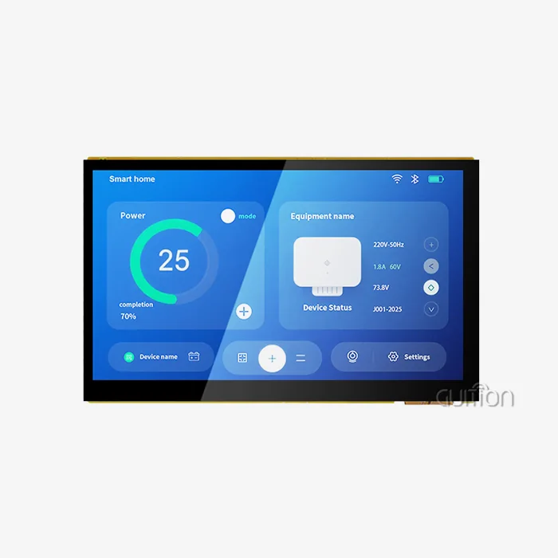

JC1060P470C_I_W
Guition · 7 lcd display module
JC1060P470C_I_W is a 7" 1024x600 IPS Capacitive touch ESP32 display board by Guition based on the ESP32-P4 with 16MB flash, 32MB PSRAM.
Features, ports & interfaces
- MIPI-DSI display
- Capacitive touch
- 32 MB PSRAM
- 16 MB flash
- microSD (TF) card slot
- Wi-Fi 6 (802.11ax, 2.4 GHz) via ESP32-C6 co-processor – version from the ESP32-C6 datasheet
- Bluetooth 5.3 (LE) via ESP32-C6 co-processor – version from the ESP32-C6 datasheet
- Thread (802.15.4) – IEEE 802.15.4 radio of the ESP32-C6 co-processor – SoC capability per the Espressif datasheet; needs firmware support
- Zigbee (802.15.4) – IEEE 802.15.4 radio of the ESP32-C6 co-processor – SoC capability per the Espressif datasheet; needs firmware support
- Matter-capable radio (Wi-Fi / Thread) – ESP32-C6 co-processor capability per the Espressif datasheet; firmware-dependent
- I2C – CN4, SH1.0 4-pin (GND, 3V3, SCL, SDA)
- 2× FPC 0.5 mm 14-pin expansion (GPIO)
- Speaker interface
- RTC RX8025T with CR1220 backup cell
- BOOT + RESET buttons
- WS2812 RGB LED
Specifications
| Parameter | Value | Source |
|---|---|---|
| Screen size | 7" | source |
| Resolution | 1024x600 | source |
| Panel | IPS | source |
| Shape | Rectangular | |
| Display interface | MIPI-DSI | source |
| Display driver | JD9165 | source |
| Touch | Capacitive | source |
| MCU / SoC | ESP32-P4NRW32 | source |
| MCU family | ESP32-P4 | |
| Co-processor | ESP32-C6 | |
| CPU frequency | 400MHz | source |
| Flash | 16MB | source |
| PSRAM | 32MB | source |
| SRAM | 768KB_HP 16KB_LP | source |
| Wi-Fi | Yes (via ESP32-C6) | source |
| Bluetooth | Yes (via ESP32-C6) | source |
| Category | ESP32-P4 Display Module | |
| Active area | 154.21 × 85.92 mm | source |
| Colors | 24-bit RGB (16.7M colors) | source |
| Connectivity | Wi-Fi, Bluetooth | source |
| Dimensions | 165.0 × 104.0 mm | source |
| Expansion / IO | TF card slot, IO ports | source |
| Interface detail | MIPI_DSI | |
| Memory | 768KB HP L2MEM, 32KB LP SRAM, 128KB HP ROM, 32MB PSRAM | source |
| Operating temp. | -20℃ ~ 70℃ | source |
| Power consumption | Approximately 600mA | source |
| ROM | 128KB | source |
| Speaker interface | Yes | source |
| Storage temp. | -30℃ ~ 80℃ | source |
| Vendor | Guition | |
| Viewing angle | IPS (Full viewing angle) | source |
| Operating voltage | 5V | source |
Official links & documentation
- guition.com product page
- guition.com product page
- guition.com model list
- guitionofficial/P4-series (official GitHub)
- zhing2006/esp-gbx – docs/boards/jc1060p470.md
- cheops/JC1060P470C_I_W
- sukesh-ak/JC1060P470C_I_W-GUITION-ESP32-P4_ESP32-C6
- indecenti/NucleoOS-P4
- charrus/Guition-esp32-p4-jc1060p470-Sci-fi-dashboard
- catorendal-a11y/tessera-deck
- Home Assistant Community: Guition esp32-p4-jc1060p470
- GalusPeres/HomeTiles
- MaxGramser/homeassistant_espscreen (Tessera)
Files
Offline copies are available on the interactive page.
Notes
- Two hardware-different boards are sold as JC1060P470 with DIFFERENT PINOUTS: JC1060P470C_I_W = yellow PCB, no case, bare ESP32-P4 + separate ESP32-C6 module; JC1060P470C_I_W_Y = black case, JC-ESP32P4-M3 module (P4 + C6), Ethernet, RS-485 and a 2×13 pin header. Use the matching archive (JC1060P470C_I_W.zip vs JC1060P470C_I_W_Y.zip).
- Newer panels (2026+, V2 mark or panel date code ≥ 2622) still use the JD9165 driver but with a different init sequence/timing; the wrong one gives a white screen with a vertical noise band.
- This family is the '7" ESP32-P4 HMI, 1024×600, MIPI-DSI' Guition board from the request. The '60 FPS' claim was not found on guition.com; community timing analysis computes ≈60 Hz (dtsi timings) / ≈65 Hz (vendor example).